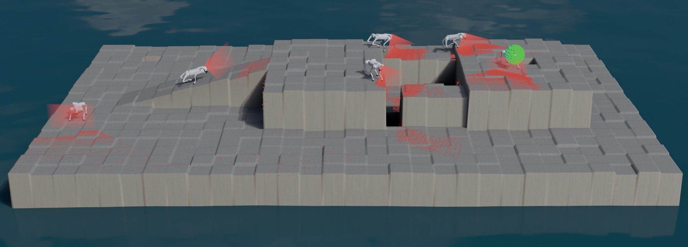
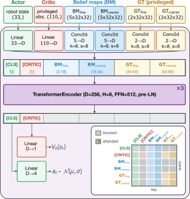
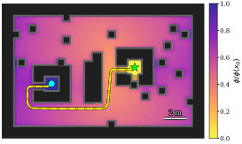
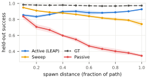
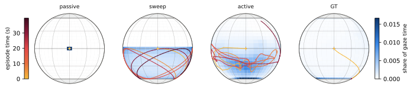

IEEE-RAS Humanoids 2026
1Inria and DI ENS, PSL, Paris, France 2Institute for Intelligent Systems and Robotics, CNRS and Sorbonne University, Paris, France 3LAAS-CNRS and University of Toulouse, Toulouse, France
bridges terrain (MuJoCo). Inlays: camera view (left) and depth
image (right).
LEAP trains a navigation policy that steers a quadruped and its camera over hazardous terrain. The reward depends only on the navigation task, with no term for sensing, so the robot learns where to look only because looking helps it reach the goal.
Active perception allows autonomous agents to select their viewpoints rather than passively process the viewpoints given to them, enabling them to target where to reduce uncertainty about their environment. Learned systems typically encourage this behavior with hand-designed proxy objectives, such as coverage or curiosity bonuses, that may conflict with the task. In this work, we propose a method to learn emergent active perception (LEAP) without augmentation of the task objective. We formulate the problem of goal-oriented navigation over hazardous terrains with goals that must be discovered visually. We then propose an architecture for navigation policies with active perception, and train them on a terrain curriculum where task pressure alone leads to the emergence of gaze control. Key to this emergence, LEAP works on a gaze-invariant representation that integrates depth images into egocentric belief maps. We validate its performance in held-out evaluation scenarios, where it achieves a 92.7% success rate, compared to 74.2% for scripted or 34.5% for passive perception, and comes within 4.6 points of a privileged oracle. We validate that LEAP navigation policies, unchanged, can be directly applied to steering quadrupedal locomotion policies in physics simulation.
Navigating to a goal position in an unknown environment:



islands instance: the spawn and goal platforms are each
ringed by a fatal moat crossed only by narrow crossings. The trace is the gradient descent on the cost-to-go from
the hardest spawn to the goal; its nodes are the reverse-curriculum spawns.islands | crests | pillars | bridges | decoys | mean | |
|---|---|---|---|---|---|---|
| Passive | 5.8 ± 1.4 | 2.5 ± 1.9 | 97.7 ± 1.2 | 36.6 ± 2.8 | 29.9 ± 5.0 | 34.5 ± 1.6 |
| Sweep | 68.4 ± 3.3 | 79.1 ± 2.2 | 75.0 ± 16.6 | 85.6 ± 2.0 | 62.6 ± 1.9 | 74.2 ± 3.3 |
| Active (LEAP) | 86.5 ± 3.4 | 93.8 ± 1.0 | 98.8 ± 1.2 | 94.9 ± 1.8 | 89.5 ± 1.7 | 92.7 ± 0.5 |
| GT | 94.9 ± 0.8 | 98.3 ± 1.1 | 99.5 ± 0.3 | 98.5 ± 0.9 | 95.3 ± 1.1 | 97.3 ± 0.3 |
Goal-reach success (%). Mean ± std over 5 seeds; per seed, 4 randomized episodes on each of 100 unseen layouts per terrain type. Camera-control variants: Passive (fixed level gaze), Sweep (pre-programmed scanning), Active (learned gaze; LEAP), and GT (oracle with ground-truth maps). Bold: best non-oracle success rate per terrain.
decoys layout, same spawn and heading for all four variants. Single
episodes.Held-out goal-reach success, mean over five terrain types and five seeds.


pillars tile with
the same initial spawn pose and neutral gaze (0,0), colored by time. Passive never moves; Sweep follows its
pre-programmed trajectory; Active (LEAP) concentrates gaze forward and down, along the direction of travel of the
agent; GT drifts into the corner and stops: with free information, looking just atrophies.| Passive | Sweep | Active (LEAP) | GT | |
|---|---|---|---|---|
islands | 18 ± 6(14.8) | 88 ± 5(33.9) | 97 ± 2(16.2) | 91 ± 4(12.6) |
crests | 16 ± 15(15.3) | 90 ± 1(23.6) | 90 ± 10(16.1) | 98 ± 0(11.7) |
pillars | 79 ± 9(54.0) | 62 ± 12(106.4) | 88 ± 15(33.3) | 86 ± 7(30.2) |
bridges | 43 ± 5(12.1) | 80 ± 6(21.0) | 97 ± 3(13.3) | 99 ± 3(10.7) |
decoys | 36 ± 7(10.6) | 76 ± 2(22.0) | 87 ± 6(12.1) | 96 ± 3(13.2) |
| mean | 38 ± 5 | 79 ± 2 | 92 ± 6 | 94 ± 2 |
Full-body transfer (MuJoCo). Held-out success (%, mean ± std over 5 seeds); in parentheses, median time to goal (s) over successful episodes, averaged over seeds. Bold: best non-oracle success rate per terrain.
@inproceedings{gokbakan2026leap,
title = {{LEAP}: Learning Emergent Active Perception for Quadruped Navigation},
author = {G{\"o}kbakan, Bora and Caron, St{\'e}phane and Sou{\`e}res, Philippe},
booktitle = {IEEE-RAS International Conference on Humanoid Robots (Humanoids)},
year = {2026},
eprint = {2609.17628},
archivePrefix = {arXiv},
url = {https://arxiv.org/abs/2609.17628}
}